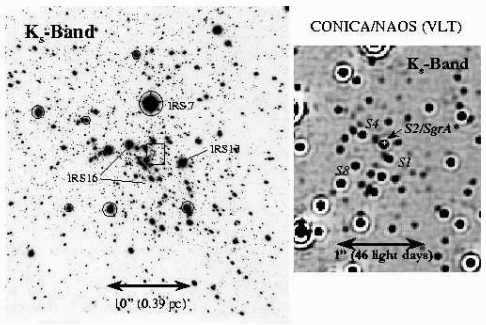

天の川銀河中心の超巨大質量コンパクトオブジェクトの発見
2020年10月、今年のノーベル物理学賞が発表されました。内容はブラックホールの理論と観測によるものでした。
- 理論: Roger Penrose
- 観測: Reihard Genzel, Andrea Ghez
観測で受賞した両名は「天の川銀河中心に超巨大質量コンパクトオブジェクトの発見したことによるもの」という事由で受賞しました。それではこの観測がどのようなものだったかを見ていきましょう。
天の川銀河中心の概要
天の川銀河中心核
天の川銀河に代表されるような円盤銀河の中心には、超巨大質量ブラックホール(Super Massive Black Holes, SMBHs)が存在することが種々の銀河観測結果から示唆されています。天の川銀河にもそれは当てはまります。観測された力学的構造から、中心から半径0.01pcより小さな領域に
が存在しなければならないと言われています。
観測
可視光による観測
以下の図は可視光で天の川銀河中心の方向を観測したものです。様々なメシエ天体と天の川銀河中心(+マーク)、そして直線で銀河面を示しています。
+マークの部分はダストによる減光を受けて暗くなっていることがわかります。このため、天の川銀河中心方向は可視光ではなく、電波・赤外・X線などの波長で調べることができます。
天の川銀河中心の位置
上図は電波で観測した天の川銀河中心(GC)です。左のパネルはcmで観測したもの、右上パネルはSgr A Eastをcmで観測したもの、右中段パネルはSgr A Westをcmで観測したものです。赤い点マークが天の川銀河中心にいるSMBH, Sgr A*の位置になります。そして右下パネルは同じくSgr A westをHCNの分子輝線で観測したもので、中心核周辺にリング構造があることがわかります。
さらにこの図はGCをX線(青色)と中間赤外(赤)と近赤外(黄)で観測し、それらを合成した画像です。この図の右側にある青白い部分(X線で明るく輝く部分)にSMBHがいると考えられています。これら観測や水メーザー源観測、そして電波による正確な位置天文学から、Sgr A*は我々から8kpcの位置にあるとされています。
GenzelとGhezの貢献
Genzel
GenzelはEckartとともに1992年から1996年にかけて3.5m New Technology Telescope(NTT)のSHARPカメラを用いてK-band(近赤外、波長)でSgr A*周辺0.04pcから0.4pcに存在する星団(Nuclear Star Cluster, NSC)の恒星39個を観測し、それらの固有運動を測定しました。Eckart & Genzel, 1996, "Observations of stellar proper motions near the Galactic Centre"によると、GCから0.015pc内にある巨大な質量をと見積もりました。最低でもSgr A*領域の質量密度の下限をと算出しました。これはSMBHが存在することを示唆していると結論づけました。
Ghez
同時期にGhezは1995年から2年間、Keck望遠鏡でK-bandで観測を行い、Sgr A*周辺にあるNSCの星90個の固有運動を算出しました。Ghez et al., 1998, "High Proper Motion Stars in the Vicinity of Sgr A*: Evidence for a Supermassive Black Hole at the Center of Our Galaxy"によると、その固有速度の大きさは1400100 km/sにもなるとの結果を出しています。その固有運動の分散とビリアル定理
から、GCにある巨大な質量をと見積もりました。この質量がという狭い領域に存在しなければならないことから、Sgr A*領域の質量密度は少なくともでなければならないと算出しました。このことから、SMBHが存在するだろうと結論づけました。
その後の観測
その後、GenzelのグループはNSCをS-star clusterと名付けました。Schodel et al., 2002, "Closest Star Seen Orbiting the Supermassive Black Hole at the Centre of the Milky Way"ではSgr A*の周りを楕円運動するS2の軌道周期などを詳細に算出しました。その周期はおよそ15.2年、我々が眺めている天球面と軌道平面がなす角度は46度、軌道離心率は0.87、近点(pericenter)とSgr A*の距離は17光時間、そしてSgr A*のSMBH質量をと見積もりました。

同時期にGhezが発表した論文 Ghez et al., 2003, "The First Measurement of Spectral Lines in a Short-Period Star Bound to the Galaxy's Central Black Hole: A Paradox of Youth"ではS2(Ghezの論文ではS02)のスペクトルを詳細に観測・解析しました。これによりS2がO8-B0星であること、15で年齢は10Myr以下と若いことがわかりました。その速度の動径成分をkm/sと算出し、そこからSgr A*のSMBH質量をと見積もりました。
Sgr A*に付随するNSCの観測だけでなく、SMBH自身の観測も行われました。SMBHが存在することにより発生したと思われる近赤外フレアとX線フレアも観測されたのです。このフレア現象はSMBH近傍に熱いガスが降着することによって起こると、理論や数値シミュレーションで予言されていました。Genzel et al., 2003, "Near-infrared flares from accreting gas around the supermassive black hole at the Galactic Centre"では、2003年5月に発生したSgr A*のフレアが近赤外で観測されたことを報告しています。このフレアの発生場所はS2軌道から推察されるSgr A*の位置に一致していることから、SMBHの存在とその位置の確証を高めるものとなりました。
最新の研究
1992年から2018年までのS2の楕円運動の様子をコンパイルした論文も出版されています。Abuter et al., 2018, "Detection of the gravitational redshift in the orbit of the star S2 near the Galactic center massive black hole"では、重力赤方偏移と横ドップラー効果による波長の変化を解析から捉えました。このことからニュートン力学では説明できない、一般相対性理論の実証の場としてSgr A*という極限環境は注目を集めています。
結言
今回は2020年ノーベル物理学賞の中でも、観測により天の川銀河中心に超巨大質量ブラックホールが存在することを示した研究をご紹介しました。
参考文献
- [1] Abuter et al., 2018, "Detection of the gravitational redshift in the orbit of the star S2 near the Galactic center massive black hole"
- [2] Eckart & Genzel, 1996, "Observations of stellar proper motions near the Galactic Centre"
- [3] Genzel et al., 2003, "Near-infrared flares from accreting gas around the supermassive black hole at the Galactic Centre"
- [4] Genzel et al., 2010, "The Galactic Center Massive Black Hole and Nuclear Star Cluster"
- [5] Ghez et al., 1998, "High Proper Motion Stars in the Vicinity of Sgr A*: Evidence for a Supermassive Black Hole at the Center of Our Galaxy"
- [6] Ghez et al., 2003, "The First Measurement of Spectral Lines in a Short-Period Star Bound to the Galaxy's Central Black Hole: A Paradox of Youth"
- [7] Schneider, 2016, "Extragalactic Astronomy and Cosmology"
- [8] Schodel et al., 2002, "Closest Star Seen Orbiting the Supermassive Black Hole at the Centre of the Milky Way"